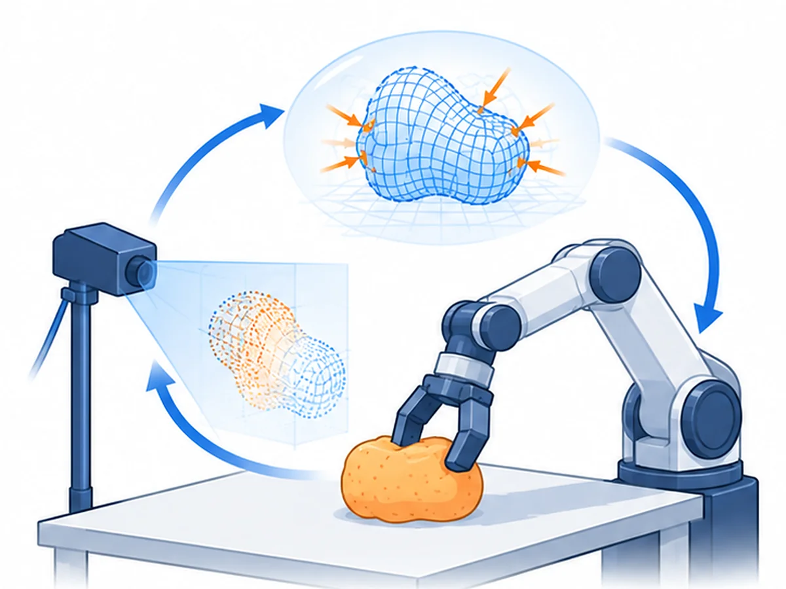

01 · physical AI
AI that perceives, understands, and acts in the physical world. I am interested in giving robots physical common sense (contact, deformation, and dynamics) so that what they perceive and learn turns into safe, reliable actions on real hardware, from soft and continuum robots to everyday manipulation.
